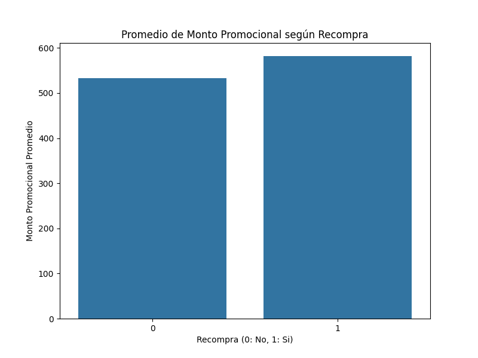
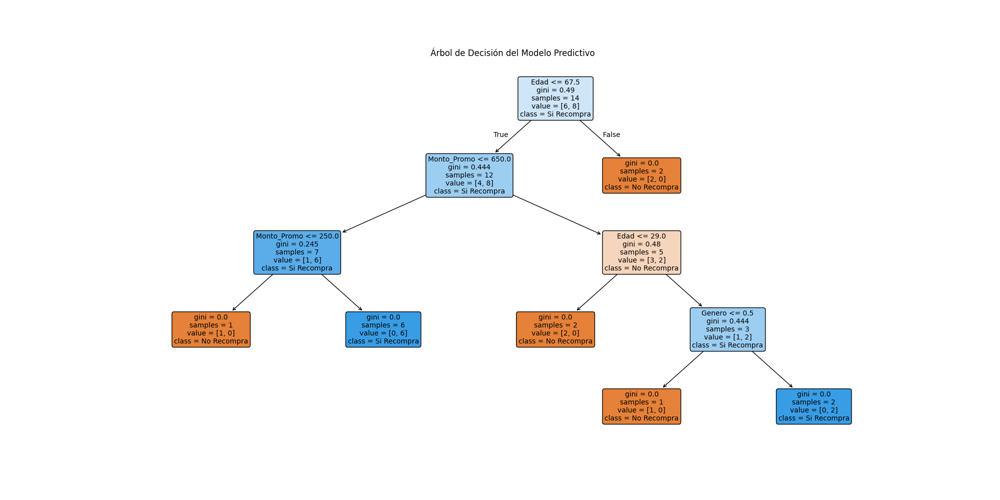
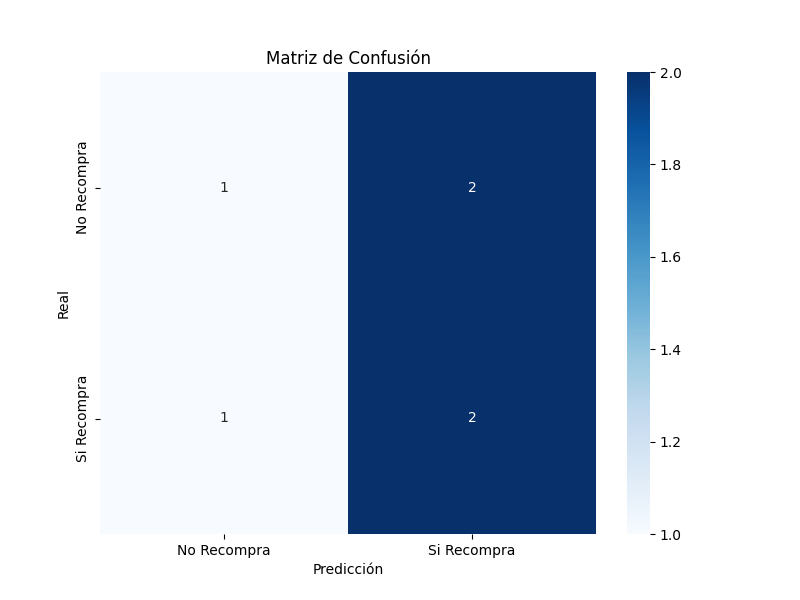

Materia: Minería de Datos
Docente: Fernández, David
Alumno: Oviedo, Lucas Nahuel
Carrera: Tecnicatura en Ciencia de Datos e Inteligencia Artificial
Institución: INSTITUTO SUPERIOR DE FORMACIÓN TÉCNICA N° 197
Año: 2025
Este trabajo práctico se centra en el análisis de datos de una cadena de gimnasios utilizando técnicas de minería de datos. Se realiza un análisis exploratorio de datos (EDA) sobre un conjunto de datos de clientes, incluyendo información sobre género, promociones recibidas, montos promocionales y comportamiento de recompra. El objetivo es desarrollar un modelo predictivo para determinar si un cliente recomprará basado en sus características.
El problema consiste en analizar datos de clientes de una cadena de gimnasios para predecir el comportamiento de recompra. Los datos incluyen información demográfica y de promociones. Se busca responder preguntas como: ¿Cómo afectan las promociones al comportamiento de recompra?, ¿Qué características son más importantes para predecir la recompra?, ¿Cuál es el rendimiento del modelo predictivo?
Se cargan las bibliotecas necesarias y el dataset de Excel.
import pandas as pd
import seaborn as sns
import matplotlib.pyplot as plt
import openpyxl
from sklearn.model_selection import train_test_split
from sklearn.tree import DecisionTreeClassifier, plot_tree
from sklearn.metrics import classification_report, confusion_matrix
df = pd.read_excel("Mini_Proyecto_Clientes_Promociones.xlsx")
print(df.head())Se convierten las variables categóricas a numéricas para el modelado.
df['Genero'] = df['Genero'].map({'F':0,'M':1})
df['Recibio_Promo'] = df['Recibio_Promo'].map({'Si':1, 'No':0})
df['Recompra'] = df['Recompra'].map({'Si':1, 'No':0})Se crea un gráfico de barras para visualizar el promedio de monto promocional según recompra.
plt.figure(figsize=(8, 6))
sns.barplot(x="Recompra", y="Monto_Promo", data=df, estimator='mean', errorbar=None)
plt.title("Promedio de Monto Promocional según Recompra")
plt.xlabel("Recompra (0: No, 1: Si)")
plt.ylabel("Monto Promocional Promedio")
plt.show()Se divide el dataset en entrenamiento y prueba, y se entrena un árbol de decisión.
X = df.drop(['Cliente_ID','Recompra'], axis=1)
y = df['Recompra']
X_train, X_test, y_train, y_test = train_test_split(X, y, test_size=0.3, random_state=42, stratify=y)
modelo = DecisionTreeClassifier(random_state=42)
modelo.fit(X_train, y_train)Se grafica el árbol de decisión entrenado.
plt.figure(figsize=(20, 10))
plot_tree(modelo,
feature_names=X.columns,
class_names=['No Recompra', 'Si Recompra'],
filled=True,
rounded=True,
fontsize=10)
plt.title("Árbol de Decisión del Modelo Predictivo")
plt.show()Se generan predicciones y se evalúa el modelo con matriz de confusión y reporte de clasificación.
y_pred = modelo.predict(X_test)
plt.figure(figsize=(8, 6))
cm = confusion_matrix(y_test, y_pred)
sns.heatmap(cm,
annot=True,
fmt='d',
cmap='Blues',
xticklabels=['No Recompra', 'Si Recompra'],
yticklabels=['No Recompra', 'Si Recompra'])
plt.title('Matriz de Confusión')
plt.xlabel('Predicción')
plt.ylabel('Real')
plt.show()
print(confusion_matrix(y_test, y_pred))
print(classification_report(y_test, y_pred))Gráfico de barras mostrando el promedio de monto promocional para clientes que recompraron y no recompraron.
Visualización del árbol de decisión utilizado para predecir la recompra de clientes.
Matriz de confusión mostrando el rendimiento del modelo en el conjunto de prueba.
Este análisis proporciona insights valiosos sobre el comportamiento de recompra de los clientes de la cadena de gimnasios. El modelo de árbol de decisión desarrollado permite predecir con cierta precisión si un cliente recomprará basado en sus características demográficas y de promociones. Los resultados pueden ser utilizados para optimizar estrategias de marketing y promociones dirigidas a aumentar la retención de clientes.